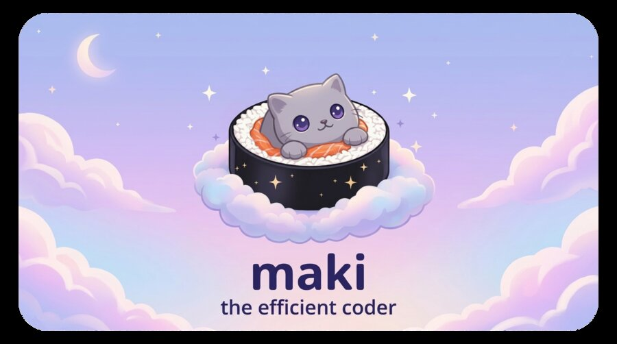
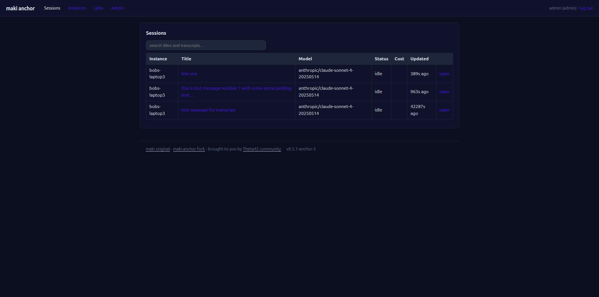
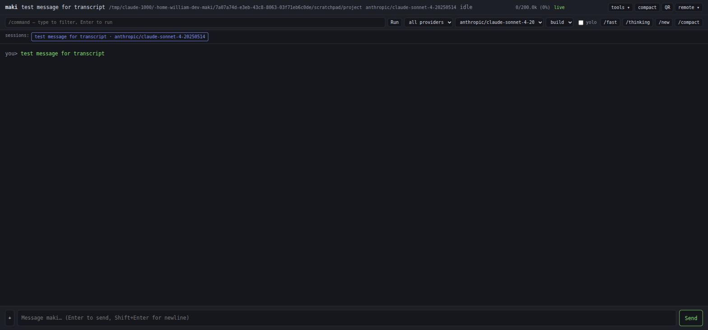
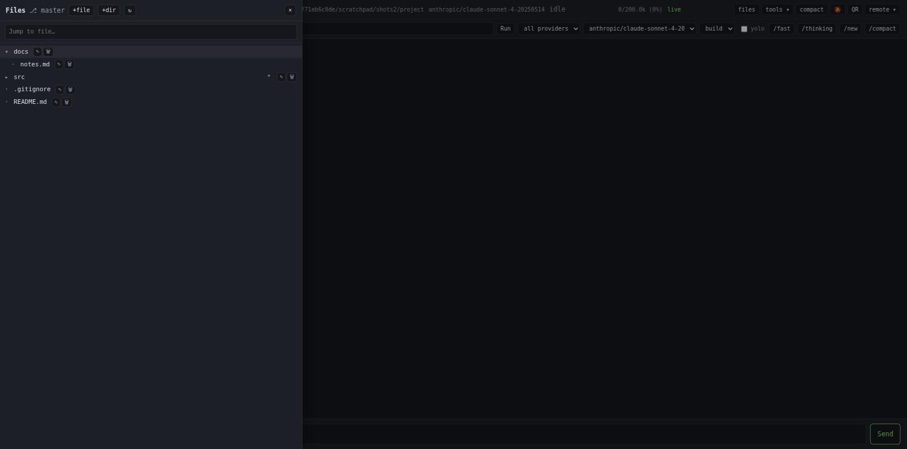
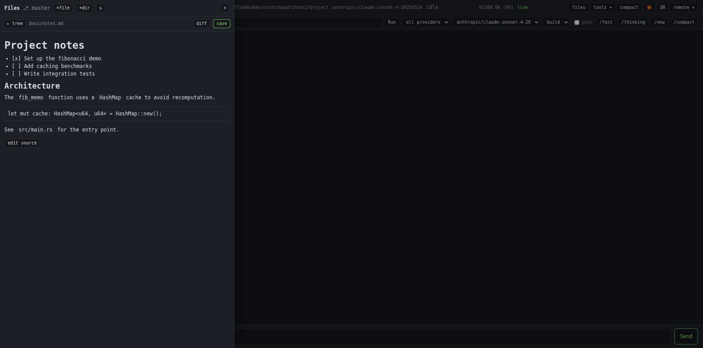
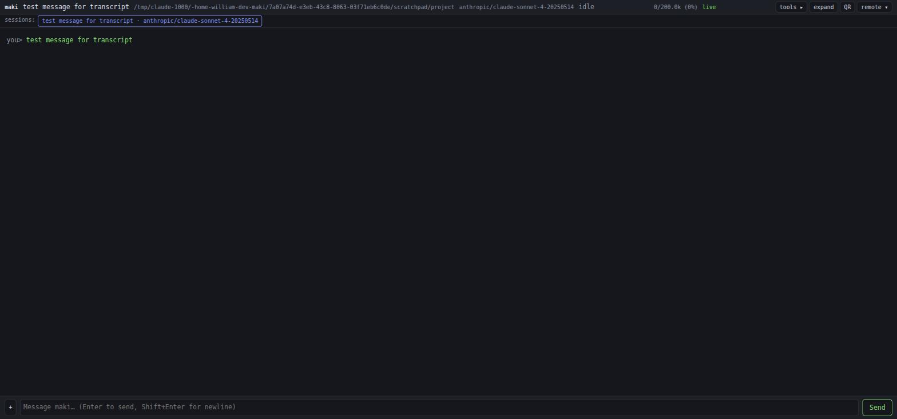
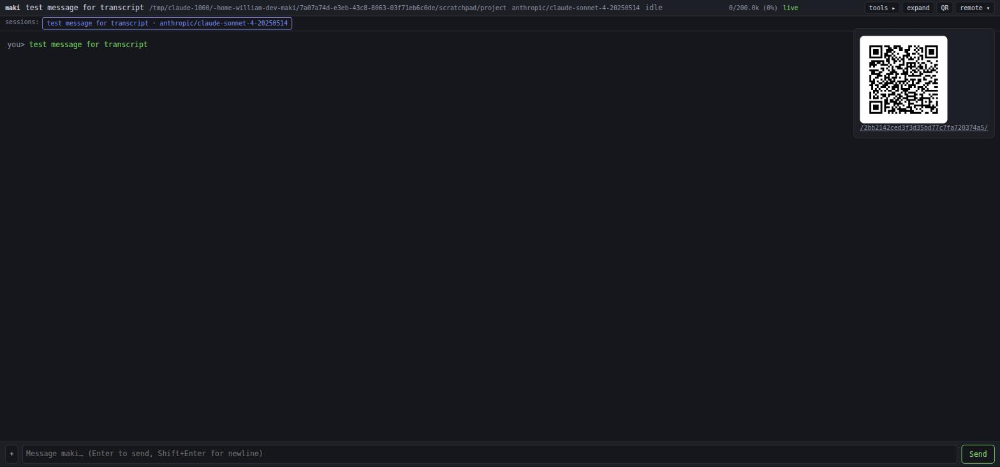

A fork of maki that adds web-based remote control and a self-hosted anchor server, so one login gets you a dashboard over every instance you run — laptop, homelab, or a box in the cloud.
I've used the remote-control features in Claude Code and in Oh My Pi (OMP), and both are genuinely useful — being able to walk away from your computer, or hand a session off entirely, is a real workflow upgrade. What I kept running into with OMP was that its terminal proxy server isn't something you can self-host, which bothered me on both privacy and safety grounds: a session with control over my machine, brokered by infrastructure I don't run. That's the gap the anchor fills — the same kind of remote control, but the proxy in the middle is yours.
A web UI that mirrors a running session, live.
One domain, one dashboard, one login for a whole fleet.






# On the server: install or update maki-anchor as a systemd service. curl -fsSL https://raw.githubusercontent.com/wmantly/maki/main/install-anchor.sh | sh # Register an instance and copy the printed one-liner for its host. maki-anchor tokens add work-laptop
-- In ~/.config/maki/init.lua on the instance host.
maki.setup {
anchor = {
url = "https://maki.example.com",
name = "work-laptop",
token = "<token from tokens add>",
},
}
Now /rc prints an anchor link instead of binding a local port. Full setup, SSO, grants, and share links are in the anchor docs.
This repo is a fork of tontinton/maki — an AI coding agent for the terminal, built for minimal context-token use: fast startup, a tree-sitter-based permission system, subagents, Lua plugins, and support for a long list of model providers, all without a JavaScript runtime in sight. Remote control and the anchor server are additions layered on top; everything else in this repository is upstream's work. If you just want the agent itself, start there.
tontinton/maki →